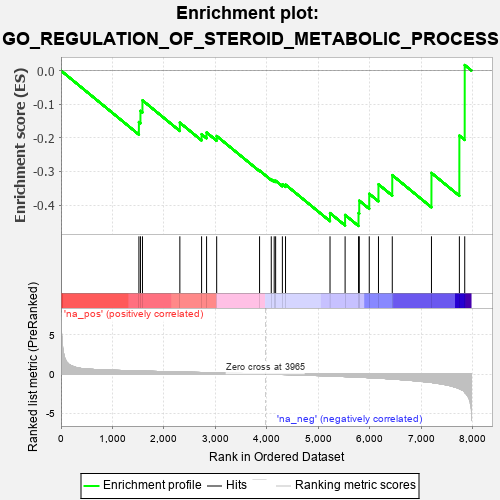
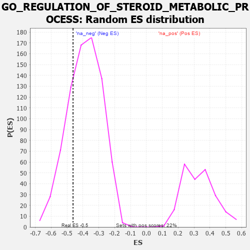

| | | Dataset | 7d |
| Phenotype | NoPhenotypeAvailable |
| Upregulated in class | na_neg |
| GeneSet | GO_REGULATION_OF_STEROID_METABOLIC_PROCESS |
| Enrichment Score (ES) | -0.46206576 |
| Normalized Enrichment Score (NES) | -1.1878691 |
| Nominal p-value | 0.24164525 |
| FDR q-value | 0.64896107 |
| FWER p-Value | 1.0 |
Table: GSEA Results Summary

Fig 1: Enrichment plot: GO_REGULATION_OF_STEROID_METABOLIC_PROCESS
Profile of the Running ES Score & Positions of GeneSet Members on the Rank Ordered List
| PROBE | GENE SYMBOL | GENE_TITLE | RANK IN GENE LIST | RANK METRIC SCORE | RUNNING ES | CORE ENRICHMENT | | 1 | IDI1 | | | 1513 | 0.389 | -0.1531 | No |
| 2 | NFYB | | | 1543 | 0.384 | -0.1198 | No |
| 3 | NFYC | | | 1582 | 0.377 | -0.0884 | No |
| 4 | REST | | | 2308 | 0.259 | -0.1548 | No |
| 5 | RORA | | | 2730 | 0.193 | -0.1892 | No |
| 6 | ARV1 | | | 2827 | 0.179 | -0.1840 | No |
| 7 | WNT4 | | | 3023 | 0.146 | -0.1946 | No |
| 8 | DGKQ | | | 3856 | 0.020 | -0.2973 | No |
| 9 | DDX20 | | | 4083 | -0.021 | -0.3238 | No |
| 10 | NFYA | | | 4140 | -0.031 | -0.3278 | No |
| 11 | GFI1 | | | 4168 | -0.037 | -0.3277 | No |
| 12 | RAN | | | 4299 | -0.059 | -0.3384 | No |
| 13 | ACADL | | | 4360 | -0.069 | -0.3392 | No |
| 14 | CLCN2 | | | 5224 | -0.250 | -0.4238 | No |
| 15 | VDR | | | 5517 | -0.325 | -0.4294 | Yes |
| 16 | ABCG1 | | | 5778 | -0.399 | -0.4238 | Yes |
| 17 | PMVK | | | 5792 | -0.403 | -0.3868 | Yes |
| 18 | SCAP | | | 5986 | -0.466 | -0.3663 | Yes |
| 19 | EGR1 | | | 6165 | -0.527 | -0.3382 | Yes |
| 20 | ABCA2 | | | 6433 | -0.634 | -0.3110 | Yes |
| 21 | TSPO | | | 7194 | -1.065 | -0.3044 | Yes |
| 22 | PANK2 | | | 7736 | -1.866 | -0.1933 | Yes |
| 23 | SP1 | | | 7840 | -2.321 | 0.0165 | Yes |
Table: GSEA details [plain text format]

Fig 2: GO_REGULATION_OF_STEROID_METABOLIC_PROCESS: Random ES distribution
Gene set null distribution of ES for GO_REGULATION_OF_STEROID_METABOLIC_PROCESS